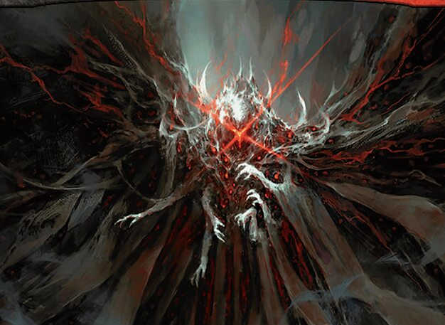
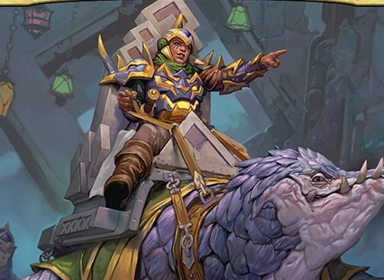
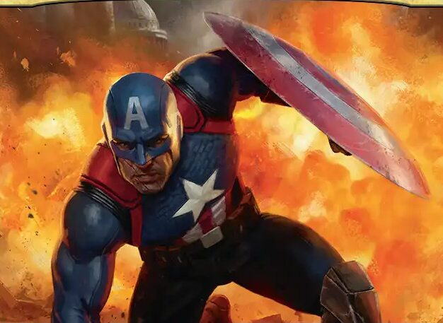

Welche Commander gewinnen mit deinem Budget am häufigsten?
64 beliebte Commander pro Preisklasse, jeweils als Budget-Deck gebaut und laufend in Forge gegeneinander getestet – mit Kartenliste, Statistik und Kaufliste für Cardmarket.
Zur Rangliste Eigenes Deck testen3 kostenlose Plätze frei
Bisher 34.632 Partien in 221 Turnieren mit 448 Decks. Letztes Turnier: – die Seite aktualisiert sich danach automatisch.
Rangliste
Die erfolgreichsten Decks bis 100 € in der Forge-Simulation (Bracket 3: höchstens 3 Game Changer).
 Illustration: Eric Deschamps · © Wizards of the Coast
Illustration: Eric Deschamps · © Wizards of the CoastOloro, Ageless Ascetic
 Illustration: Kai Carpenter · © Wizards of the Coast
Illustration: Kai Carpenter · © Wizards of the CoastGiada, Font of Hope
 Illustration: Valera Lutfullina · © Wizards of the Coast
Illustration: Valera Lutfullina · © Wizards of the CoastUreni of the Unwritten
Rangliste bis 100 €
aus 51 Turnieren Y'shtola, Night's BlessedElo 1668
Y'shtola, Night's BlessedElo 1668 Atraxa, Praetors' VoiceElo 1666
Atraxa, Praetors' VoiceElo 1666 Sephiroth, Fabled SOLDIER // Sephiroth, One-Winged AngelElo 1658
Sephiroth, Fabled SOLDIER // Sephiroth, One-Winged AngelElo 1658 The Ur-DragonElo 1657
The Ur-DragonElo 1657
Valgavoth, Harrower of SoulsElo 1654 Arcades, the StrategistElo 1634
Arcades, the StrategistElo 1634 Kaalia of the VastElo 1628
Kaalia of the VastElo 1628 Jodah, the UnifierElo 1620
Jodah, the UnifierElo 1620 Teysa KarlovElo 1612
Teysa KarlovElo 1612 Edgar MarkovElo 1604
Edgar MarkovElo 1604 Pantlaza, Sun-FavoredElo 1603
Pantlaza, Sun-FavoredElo 1603 Rin and Seri, InseparableElo 1590
Rin and Seri, InseparableElo 1590 Bello, Bard of the BramblesElo 1589
Bello, Bard of the BramblesElo 1589 Ygra, Eater of AllElo 1579
Ygra, Eater of AllElo 1579 Ashling, the LimitlessElo 1578
Ashling, the LimitlessElo 1578 Korvold, Fae-Cursed KingElo 1571
Korvold, Fae-Cursed KingElo 1571 Hakbal of the Surging SoulElo 1569
Hakbal of the Surging SoulElo 1569 Zhulodok, Void GorgerElo 1561
Zhulodok, Void GorgerElo 1561 Atla Palani, Nest TenderElo 1544
Atla Palani, Nest TenderElo 1544 Lathril, Blade of the ElvesElo 1544
Lathril, Blade of the ElvesElo 1544 Wilhelt, the RotcleaverElo 1533
Wilhelt, the RotcleaverElo 1533 Zurgo StormrenderElo 1523
Zurgo StormrenderElo 1523 The Wise MothmanElo 1515
The Wise MothmanElo 1515 Hearthhull, the WorldseedElo 1512
Hearthhull, the WorldseedElo 1512
Felothar the SteadfastElo 1504 Kefka, Court Mage // Kefka, Ruler of RuinElo 1499
Kefka, Court Mage // Kefka, Ruler of RuinElo 1499 Teval, the Balanced ScaleElo 1490
Teval, the Balanced ScaleElo 1490 Muldrotha, the GravetideElo 1488
Muldrotha, the GravetideElo 1488 Ulalek, Fused AtrocityElo 1487
Ulalek, Fused AtrocityElo 1487 Caesar, Legion's EmperorElo 1481
Caesar, Legion's EmperorElo 1481 Chatterfang, Squirrel GeneralElo 1478
Chatterfang, Squirrel GeneralElo 1478 The Wandering MinstrelElo 1469
The Wandering MinstrelElo 1469 Baylen, the HaymakerElo 1458
Baylen, the HaymakerElo 1458 Vivi OrnitierElo 1453
Vivi OrnitierElo 1453 Meren of Clan Nel TothElo 1432
Meren of Clan Nel TothElo 1432 Aragorn, the UniterElo 1430
Aragorn, the UniterElo 1430 Cloud, Ex-SOLDIERElo 1424
Cloud, Ex-SOLDIERElo 1424 Yuriko, the Tiger's ShadowElo 1419
Yuriko, the Tiger's ShadowElo 1419 Ms. BumbleflowerElo 1410
Ms. BumbleflowerElo 1410 Isshin, Two Heavens as OneElo 1404
Isshin, Two Heavens as OneElo 1404 Maralen, Fae AscendantElo 1403
Maralen, Fae AscendantElo 1403 Esika, God of the Tree // The Prismatic BridgeElo 1391
Esika, God of the Tree // The Prismatic BridgeElo 1391 Animar, Soul of ElementsElo 1385
Animar, Soul of ElementsElo 1385 Mr. House, President and CEOElo 1383
Mr. House, President and CEOElo 1383 Tidus, Yuna's GuardianElo 1382
Tidus, Yuna's GuardianElo 1382 Frodo, Adventurous Hobbit // Sam, Loyal AttendantElo 1382
Frodo, Adventurous Hobbit // Sam, Loyal AttendantElo 1382 The NecrobloomElo 1360
The NecrobloomElo 1360 Sauron, the Dark LordElo 1358
Sauron, the Dark LordElo 1358 Kenrith, the Returned KingElo 1333
Kenrith, the Returned KingElo 1333 Hashaton, Scarab's FistElo 1332
Hashaton, Scarab's FistElo 1332 Flubs, the FoolElo 1305
Flubs, the FoolElo 1305| # | Commander | Elo | Form | Stufe | Partien | Preis |
|---|---|---|---|---|---|---|
| 1 | | 1765▼8 | 3211313144 | S | 510 (4) | 96,05 € |
| 2 | | 1708▼14 | 3432341312 | S | 511 (12) | 98,72 € |
| 3 | | 1708▼14 | 4123434411 | S | 510 (2) | 97,51 € |
| 4 |  | 1701▲20 | 2342111241 | S | 511 (3) | 95,28 € |
| 5 |  | 1686▲17 | 4314131122 | S | 510 (1) | 95,52 € |
| 6 |  | 1671▲6 | 3112124423 | S | 511 (10) | 99,49 € |
| 7 | | 1668▼12 | 1324331233 | A | 511 (6) | 88,46 € |
| 8 | | 1666▼5 | 2411224333 | A | 511 (13) | 99,95 € |
| 9 | | 1658▲15 | 3113412431 | A | 510 (9) | 97,05 € |
| 10 | | 1657▲25 | 1222212124 | A | 512 (4) | 95,86 € |
| 11 | 1654▲25 | 1413123213 | A | 511 (2) | 98,65 € | |
| 12 | | 1634▲5 | 2341411234 | A | 511 (16) | 94,95 € |
| 13 | | 1628▼11 | 2134443133 | A | 511 (9) | 99,62 € |
| 14 | | 1620▼37 | 2233423424 | A | 510 (14) | 92,64 € |
| 15 | | 1612▲1 | 4221443212 | A | 510 (23) | 94,35 € |
| 16 | | 1604▼13 | 43214443=1 | A | 511 (13) | 98,74 € |
| 17 | | 1603▲29 | 3111223142 | A | 510 (15) | 98,74 € |
| 18 | | 1590▲29 | 1323132113 | A | 510 (16) | 99,78 € |
| 19 | | 1589▲4 | 1242233412 | A | 510 (9) | 96,61 € |
| 20 | | 1579▲13 | 1123441421 | A | 512 (11) | 98,51 € |
| 21 | | 1578▼14 | 1342322432 | B | 512 (13) | 91,75 € |
| 22 | | 1571▲9 | 2224114314 | B | 511 (10) | 97,85 € |
| 23 | | 1569▼17 | 4434222142 | B | 512 (6) | 97,48 € |
| 24 | | 1561▲3 | 3142124431 | B | 510 (42) | 99,59 € |
| 25 | | 1544▲6 | 2133433211 | B | 510 (17) | 95,17 € |
| 26 | | 1544▲2 | 2331441124 | B | 511 (11) | 98,67 € |
| 27 | | 1533▲13 | 4211331332 | B | 511 (12) | 98,14 € |
| 28 | | 1523▲54 | 1142111213 | B | 512 (24) | 91,59 € |
| 29 | | 1515▼8 | 2421443122 | B | 512 (13) | 94,36 € |
| 30 | | 1512▼11 | 1444424=21 | B | 510 (15) | 93,70 € |
| 31 | 1504▲12 | 4212242121 | B | 281 | 95,06 € | |
| 32 | | 1499▲24 | 2123221412 | B | 511 (5) | 97,24 € |
| 33 | | 1490▼6 | 3424112333 | B | 511 (25) | 98,54 € |
| 34 | | 1488▼8 | 3242411432 | B | 510 (23) | 94,01 € |
| 35 | | 1487▼19 | 3433313232 | B | 511 (15) | 98,17 € |
| 36 | | 1481▼1 | 4312312243 | B | 512 (17) | 93,00 € |
| 37 | | 1478▲9 | 1421122422 | B | 510 (18) | 97,93 € |
| 38 | | 1469▲3 | 2111443234 | B | 192 | 93,03 € |
| 39 | | 1458▼10 | 1233231444 | B | 510 (32) | 99,73 € |
| 40 | | 1453▼14 | 4322142441 | B | 512 (9) | 99,98 € |
| 41 | | 1432▲1 | 3314133143 | B | 511 (9) | 98,96 € |
| 42 | | 1430▼18 | 4442231343 | B | 512 (25) | 92,00 € |
| 43 | | 1424▼16 | 2344414341 | B | 510 (14) | 99,32 € |
| 44 | | 1419▲17 | 3312421411 | B | 511 (18) | 99,19 € |
| 45 | | 1410▲7 | 3241212134 | C | 511 (34) | 88,35 € |
| 46 | | 1404▼38 | 4133434344 | C | 510 (15) | 95,64 € |
| 47 | | 1403▲18 | 1312132313 | C | 512 (26) | 96,92 € |
| 48 | | 1391▲15 | 2112332314 | C | 511 (21) | 98,43 € |
| 49 | | 1385±0 | 1223143332 | C | 511 (13) | 98,89 € |
| 50 | | 1383▼3 | 4141424124 | C | 512 (13) | 99,99 € |
| 51 | | 1382▼31 | 1444443124 | C | 511 (15) | 99,99 € |
| 52 | | 1382▲6 | 1431312431 | C | 512 (33) | 99,99 € |
| 53 | | 1360▲2 | 2314113424 | C | 510 (44) | 98,11 € |
| 54 | | 1358▼17 | 4442443121 | C | 513 (13) | 99,98 € |
| 55 | | 1333▼5 | 2224341241 | C | 511 (34) | 97,31 € |
| 56 | | 1332▼8 | 3143332222 | C | 513 (23) | 97,26 € |
| 57 | 1314▲17 | 1433231123 | C | 110 | 96,47 € | |
| 58 | | 1305▲12 | 3242223112 | C | 512 (37) | 96,95 € |
| 59 |  | 1301▲5 | 3323134231 | D | 512 (25) | 97,12 € |
| 60 |  | 1277▲9 | 4133214413 | D | 513 (33) | 97,54 € |
| 61 |  | 1268▼7 | 4312322442 | D | 511 (24) | 98,88 € |
| 62 |  | 1264▼15 | 2134433333 | D | 512 (16) | 98,00 € |
| 63 |  | 1212▼11 | 4222324334 | D | 513 (21) | 99,09 € |
| 64 |  | 1204▼25 | 2441444444 | D | 512 (33) | 98,65 € |
- Reign of Dragons – Elo 1572, Siegquote 28 % in 190 Partien, wäre Platz 22
- Avengers Assemble – Elo 1557, Siegquote 25 % in 190 Partien, wäre Platz 25
- Turtle Power! – Elo 1527, Siegquote 27 % in 190 Partien, wäre Platz 28
- Doom Prevails – Elo 1514, Siegquote 25 % in 190 Partien, wäre Platz 30
Nicht mehr im Feld – bei EDHREC aus den Top 64 gefallen und darum nicht mehr in der Rangliste: Gishath, Sun's Avatar (Elo 1684, 318 Partien), Tom Bombadil (Elo 1502, 384 Partien), Arabella, Abandoned Doll (Elo 1466, 216 Partien)
Die erfolgreichsten Decks bis 200 € in der Forge-Simulation (Bracket 3: höchstens 3 Game Changer).
Illustration: Eric Deschamps · © Wizards of the CoastOloro, Ageless Ascetic
Illustration: Mark Winters · © Wizards of the CoastNekusar, the Mindrazer
Illustration: Valera Lutfullina · © Wizards of the CoastUreni of the Unwritten
Rangliste bis 200 €
aus 50 TurnierenKaalia of the VastElo 1690Edgar MarkovElo 1663Valgavoth, Harrower of SoulsElo 1660Miirym, Sentinel WyrmElo 1658Sephiroth, Fabled SOLDIER // Sephiroth, One-Winged AngelElo 1657Pantlaza, Sun-FavoredElo 1633Bello, Bard of the BramblesElo 1622Kuja, Genome Sorcerer // Trance Kuja, Fate DefiedElo 1612The Ur-DragonElo 1604Atla Palani, Nest TenderElo 1599Jodah, the UnifierElo 1581Hakbal of the Surging SoulElo 1577The Wise MothmanElo 1576Korvold, Fae-Cursed KingElo 1558Zhulodok, Void GorgerElo 1551Rin and Seri, InseparableElo 1542Ashling, the LimitlessElo 1540Ulalek, Fused AtrocityElo 1535Ygra, Eater of AllElo 1534Teysa KarlovElo 1531Teval, the Balanced ScaleElo 1520Hearthhull, the WorldseedElo 1517Arcades, the StrategistElo 1509Ms. BumbleflowerElo 1499Baylen, the HaymakerElo 1492Lathril, Blade of the ElvesElo 1488Animar, Soul of ElementsElo 1488Meren of Clan Nel TothElo 1481Aragorn, the UniterElo 1462Isshin, Two Heavens as OneElo 1459Muldrotha, the GravetideElo 1448Zurgo StormrenderElo 1446Kefka, Court Mage // Kefka, Ruler of RuinElo 1440Vivi OrnitierElo 1438Yuriko, the Tiger's ShadowElo 1435Caesar, Legion's EmperorElo 1429Felothar the SteadfastElo 1422Maralen, Fae AscendantElo 1419Wilhelt, the RotcleaverElo 1417The Wandering MinstrelElo 1415Chatterfang, Squirrel GeneralElo 1399Esika, God of the Tree // The Prismatic BridgeElo 1390Tidus, Yuna's GuardianElo 1390The NecrobloomElo 1383Flubs, the FoolElo 1367Cloud, Ex-SOLDIERElo 1365Sauron, the Dark LordElo 1358Mr. House, President and CEOElo 1354Hashaton, Scarab's FistElo 1350Frodo, Adventurous Hobbit // Sam, Loyal AttendantElo 1324Glarb, Calamity's AugurElo 1322Breya, Etherium ShaperElo 1306| # | Commander | Elo | Form | Stufe | Partien | Preis |
|---|---|---|---|---|---|---|
| 1 | | 1786▲2 | 1214142411 | S | 503 (10) | 186,48 € |
| 2 | | 1762▲24 | 2441111131 | S | 502 (3) | 190,96 € |
| 3 | | 1710▼3 | 1123434122 | S | 503 (6) | 191,66 € |
| 4 | | 1706▲25 | 1414311213 | S | 501 (11) | 191,67 € |
| 5 | | 1696▼16 | 3132413424 | S | 501 (11) | 198,23 € |
| 6 | | 1691▼5 | 1332413223 | S | 500 (7) | 185,41 € |
| 7 | | 1690▼19 | 3214234431 | A | 502 (7) | 193,58 € |
| 8 | | 1663▼23 | 4232212444 | A | 500 (11) | 194,44 € |
| 9 | 1660▲25 | 2331121313 | A | 500 (2) | 191,40 € | |
| 10 | | 1658▲14 | 2121221334 | A | 502 (5) | 196,05 € |
| 11 | | 1657▼11 | 2413213344 | A | 501 (11) | 199,32 € |
| 12 | | 1633▲35 | 1311341124 | A | 500 (10) | 193,98 € |
| 13 | | 1622▲25 | 2342122112 | A | 501 (7) | 183,14 € |
| 14 | | 1612▼1 | 3432133312 | A | 500 (3) | 194,93 € |
| 15 | | 1604▼23 | 4422421443 | A | 500 (4) | 192,28 € |
| 16 | | 1599▼17 | 4143323223 | A | 500 (15) | 195,00 € |
| 17 | | 1581▲8 | 1144423412 | A | 501 (20) | 184,09 € |
| 18 | | 1577▲12 | 2441312214 | A | 500 (13) | 174,75 € |
| 19 | | 1576▼5 | 3332314421 | A | 502 (16) | 171,52 € |
| 20 | | 1558▼4 | 4213423314 | B | 501 (10) | 191,19 € |
| 21 | | 1551▼2 | 1131424323 | B | 502 (48) | 198,66 € |
| 22 | | 1542▲22 | 4413211412 | B | 501 (18) | 190,75 € |
| 23 | | 1540▲42 | 1313211122 | B | 501 (21) | 183,96 € |
| 24 | | 1535▲51 | 2112112132 | B | 502 (18) | 193,42 € |
| 25 | | 1534▼8 | 2213243132 | B | 500 (17) | 198,57 € |
| 26 | | 1531▲5 | 1413332412 | B | 501 (18) | 198,92 € |
| 27 | | 1520▼16 | 2132423233 | B | 501 (35) | 198,62 € |
| 28 | | 1517▼5 | 2341141444 | B | 500 (29) | 173,22 € |
| 29 | | 1509▼16 | 3244134343 | B | 500 (13) | 185,10 € |
| 30 | | 1499▼6 | 3114222433 | B | 501 (28) | 191,83 € |
| 31 | | 1492▼32 | 2414433243 | B | 503 (31) | 196,90 € |
| 32 | | 1488▼32 | 4224431334 | B | 500 (15) | 196,36 € |
| 33 | | 1488▲12 | 3332311132 | B | 501 (20) | 193,35 € |
| 34 | | 1481▼33 | 1443343324 | B | 500 (18) | 191,38 € |
| 35 | | 1462▲20 | 1141142233 | B | 500 (24) | 186,80 € |
| 36 | | 1459▼15 | 3443442311 | B | 501 (10) | 185,16 € |
| 37 | | 1448▲13 | 1234134212 | B | 500 (24) | 184,81 € |
| 38 | | 1446▼2 | 4342122414 | B | 500 (21) | 183,77 € |
| 39 | | 1440▲1 | 4233211414 | B | 501 (11) | 197,77 € |
| 40 | | 1438▼3 | 3324342121 | B | 502 (12) | 197,38 € |
| 41 | | 1435▲23 | 2224111422 | B | 500 (11) | 198,01 € |
| 42 | | 1429▼30 | 3223344323 | B | 503 (19) | 180,40 € |
| 43 | 1422▼19 | 4133243322 | B | 320 (1) | 191,06 € | |
| 44 | | 1419▲25 | 1414442111 | B | 501 (33) | 197,30 € |
| 45 | | 1417▲9 | 4121123343 | C | 500 (16) | 191,48 € |
| 46 | | 1415▲49 | 3122111411 | C | 192 (2) | 189,94 € |
| 47 | | 1399▼34 | 4343314244 | C | 503 (21) | 190,27 € |
| 48 | | 1390▼8 | 2332132224 | C | 502 (22) | 192,42 € |
| 49 | | 1390▼17 | 4424221241 | C | 502 (23) | 199,54 € |
| 50 | | 1383▼2 | 4313233141 | C | 502 (39) | 192,78 € |
| 51 | | 1367▲33 | 1111424142 | C | 501 (27) | 193,61 € |
| 52 | | 1365▼34 | 4442143334 | C | 500 (20) | 199,40 € |
| 53 | | 1358▲17 | 3311332141 | C | 502 (14) | 193,37 € |
| 54 | | 1354▼14 | 3232244313 | C | 502 (22) | 199,74 € |
| 55 | | 1350▼7 | 3231142442 | C | 501 (15) | 197,54 € |
| 56 | | 1324▲1 | 3421243241 | C | 501 (35) | 190,60 € |
| 57 | | 1322▼16 | 1234421444 | C | 501 (48) | 184,95 € |
| 58 | | 1306▼18 | 4432124332 | C | 501 (23) | 196,76 € |
| 59 | | 1294▲4 | 2143243321 | D | 501 (40) | 196,83 € |
| 60 | | 1289▲10 | 1423422132 | D | 501 (24) | 191,30 € |
| 61 | | 1286▼8 | 2444314313 | D | 502 (28) | 196,29 € |
| 62 | | 1283▼6 | 2324324213 | D | 500 (29) | 192,81 € |
| 63 | 1262▲11 | 1213323234 | D | 111 | 196,04 € | |
| 64 | | 1213▲12 | 2142414243 | D | 504 (18) | 196,79 € |
- Reign of Dragons – Elo 1593, Siegquote 25 % in 170 Partien, wäre Platz 17
- Doom Prevails – Elo 1553, Siegquote 25 % in 170 Partien, wäre Platz 21
- Avengers Assemble – Elo 1530, Siegquote 29 % in 170 Partien, wäre Platz 27
- Turtle Power! – Elo 1530, Siegquote 26 % in 170 Partien, wäre Platz 27
Nicht mehr im Feld – bei EDHREC aus den Top 64 gefallen und darum nicht mehr in der Rangliste: Gishath, Sun's Avatar (Elo 1713, 300 Partien), Tom Bombadil (Elo 1565, 360 Partien), Arabella, Abandoned Doll (Elo 1512, 165 Partien)
Die erfolgreichsten Decks bis 300 € in der Forge-Simulation (Bracket 3: höchstens 3 Game Changer).
Illustration: Eric Deschamps · © Wizards of the CoastOloro, Ageless Ascetic
Illustration: Valera Lutfullina · © Wizards of the CoastUreni of the Unwritten
Illustration: Kai Carpenter · © Wizards of the CoastGiada, Font of Hope
Rangliste bis 300 €
aus 28 TurnierenPantlaza, Sun-FavoredElo 1685Kaalia of the VastElo 1671Kuja, Genome Sorcerer // Trance Kuja, Fate DefiedElo 1668Zhulodok, Void GorgerElo 1667Sephiroth, Fabled SOLDIER // Sephiroth, One-Winged AngelElo 1666Y'shtola, Night's BlessedElo 1664Miirym, Sentinel WyrmElo 1618Ygra, Eater of AllElo 1618Atraxa, Praetors' VoiceElo 1611The Wise MothmanElo 1602Korvold, Fae-Cursed KingElo 1575Jodah, the UnifierElo 1570Atla Palani, Nest TenderElo 1564Bello, Bard of the BramblesElo 1564Aragorn, the UniterElo 1553Hakbal of the Surging SoulElo 1550Meren of Clan Nel TothElo 1545Caesar, Legion's EmperorElo 1539Zurgo StormrenderElo 1539Ulalek, Fused AtrocityElo 1535Arcades, the StrategistElo 1522Lathril, Blade of the ElvesElo 1522Teysa KarlovElo 1516Teval, the Balanced ScaleElo 1513Felothar the SteadfastElo 1508Rin and Seri, InseparableElo 1492Esika, God of the Tree // The Prismatic BridgeElo 1480Isshin, Two Heavens as OneElo 1467Animar, Soul of ElementsElo 1459Baylen, the HaymakerElo 1454Vivi OrnitierElo 1453Ashling, the LimitlessElo 1444Muldrotha, the GravetideElo 1434Wilhelt, the RotcleaverElo 1424Cloud, Ex-SOLDIERElo 1412Ms. BumbleflowerElo 1406The Wandering MinstrelElo 1405Hearthhull, the WorldseedElo 1403Frodo, Adventurous Hobbit // Sam, Loyal AttendantElo 1400Yuriko, the Tiger's ShadowElo 1400Tidus, Yuna's GuardianElo 1398Mr. House, President and CEOElo 1378Sauron, the Dark LordElo 1375Chatterfang, Squirrel GeneralElo 1364Kefka, Court Mage // Kefka, Ruler of RuinElo 1354Krenko, Mob BossElo 1340Hashaton, Scarab's FistElo 1331Maralen, Fae AscendantElo 1330The NecrobloomElo 1320Breya, Etherium ShaperElo 1297| # | Commander | Elo | Form | Stufe | Partien | Preis |
|---|---|---|---|---|---|---|
| 1 | | 1808▲21 | 2111333111 | S | 283 | 282,37 € |
| 2 | | 1728▼4 | 1132244124 | S | 282 | 286,81 € |
| 3 | | 1716▲7 | 1242331132 | S | 280 | 290,39 € |
| 4 | | 1712▼28 | 3344233123 | S | 281 | 273,75 € |
| 5 | | 1709▼2 | 3113122443 | S | 283 | 284,04 € |
| 6 | | 1696▼41 | 4434221344 | S | 280 (1) | 291,09 € |
| 7 | 1687▲25 | 2211423211 | A | 282 | 293,20 € | |
| 8 | | 1685±0 | 3331413134 | A | 280 (1) | 299,31 € |
| 9 | | 1671▲1 | 4132232123 | A | 280 | 294,71 € |
| 10 | | 1668▼9 | 2231142433 | A | 280 | 298,71 € |
| 11 | | 1667▼2 | 2424131413 | A | 282 (8) | 297,57 € |
| 12 | | 1666▼1 | 3241134241 | A | 280 | 297,66 € |
| 13 | | 1664▼34 | 2421443344 | A | 281 | 290,28 € |
| 14 | | 1618▼18 | 2343242341 | A | 282 | 290,79 € |
| 15 | | 1618▲18 | 4112424131 | A | 280 (1) | 288,62 € |
| 16 | | 1611▲20 | 3414114221 | A | 281 | 290,57 € |
| 17 | | 1602▼13 | 4424231144 | A | 280 | 271,32 € |
| 18 | | 1575▲7 | 1233421323 | A | 282 | 299,70 € |
| 19 | | 1570▲30 | 2114221312 | A | 280 (2) | 293,25 € |
| 20 | | 1564▲4 | 4232141241 | B | 280 (2) | 295,92 € |
| 21 | | 1564▲19 | 1324414112 | B | 281 (3) | 278,06 € |
| 22 | | 1553▼13 | 1232324243 | B | 280 (4) | 285,29 € |
| 23 | | 1550▼17 | 4133433413 | B | 280 | 278,12 € |
| 24 | | 1545▲12 | 1423223121 | B | 282 | 282,28 € |
| 25 | | 1539▼21 | 3243132343 | B | 280 (2) | 290,41 € |
| 26 | | 1539▲15 | 3213=21314 | B | 280 | 296,00 € |
| 27 | | 1535±0 | 1341144422 | B | 281 (2) | 296,80 € |
| 28 | | 1522▲24 | 1441311423 | B | 280 (3) | 269,90 € |
| 29 | | 1522▼17 | 444=331231 | B | 281 | 297,69 € |
| 30 | | 1516▲14 | 1233412213 | B | 280 | 275,01 € |
| 31 | | 1513▼4 | 2321322323 | B | 281 | 290,70 € |
| 32 | 1508▲13 | 3313212421 | B | 280 (3) | 211,15 € | |
| 33 | | 1492▲35 | 2324321111 | B | 280 | 299,55 € |
| 34 | | 1480▲10 | 3331231142 | B | 283 (4) | 280,46 € |
| 35 | | 1467▼42 | 3224443342 | B | 280 | 279,68 € |
| 36 | | 1459▼22 | 442=444141 | B | 281 (3) | 291,13 € |
| 37 | | 1454▲13 | 1121=43233 | B | 280 (1) | 295,11 € |
| 38 | | 1453▼7 | 4114233424 | B | 280 (2) | 293,69 € |
| 39 | | 1444▼9 | 2413124344 | B | 281 | 288,59 € |
| 40 | | 1434▼3 | 1433232214 | B | 281 (2) | 288,68 € |
| 41 | | 1424▲27 | 1412321214 | B | 282 (1) | 278,97 € |
| 42 | | 1412▲6 | 3314413142 | B | 282 | 288,42 € |
| 43 | | 1406▼6 | 4132424133 | B | 280 (1) | 292,39 € |
| 44 | | 1405▼28 | 4413144333 | B | 181 | 275,42 € |
| 45 | | 1403▼12 | 3331433414 | B | 280 (3) | 232,69 € |
| 46 | | 1400▲11 | 4112314312 | C | 281 (4) | 280,07 € |
| 47 | | 1400▲10 | 2143121432 | C | 281 | 294,42 € |
| 48 | | 1398▲1 | 1323114224 | C | 281 (2) | 287,36 € |
| 49 | | 1378▼32 | 2422423444 | C | 282 (2) | 294,23 € |
| 50 | | 1375▲5 | 2234124211 | C | 280 (1) | 296,55 € |
| 51 | | 1364▼45 | 4243343423 | C | 282 (1) | 299,23 € |
| 52 | | 1354▲2 | 1313324322 | C | 282 (1) | 295,02 € |
| 53 | | 1340▼3 | 4343212421 | C | 281 (3) | 296,31 € |
| 54 | | 1331▼1 | 3321412242 | C | 280 (2) | 294,06 € |
| 55 | | 1330▲28 | 2442113211 | C | 281 (2) | 295,37 € |
| 56 | | 1320▼4 | 144222=134 | C | 280 (9) | 276,49 € |
| 57 | 1311▼9 | 22444=1413 | C | 101 | 296,45 € | |
| 58 | | 1297▲24 | 3111442143 | C | 280 (4) | 286,36 € |
| 59 | | 1294▼1 | 4442331231 | D | 280 (9) | 295,98 € |
| 60 | | 1291▲3 | 4131341442 | D | 280 (6) | 298,02 € |
| 61 | | 1267±0 | 14243=1234 | D | 280 (3) | 267,87 € |
| 62 | | 1265▲6 | 3212423341 | D | 281 (4) | 290,34 € |
| 63 | | 1252▼11 | 3324233232 | D | 280 (6) | 272,63 € |
| 64 | | 1220▼7 | 22333=4332 | D | 282 (3) | 288,99 € |
- Reign of Dragons – Elo 1598, Siegquote 24 % in 140 Partien, wäre Platz 18
- Doom Prevails – Elo 1517, Siegquote 24 % in 140 Partien, wäre Platz 30
- Avengers Assemble – Elo 1504, Siegquote 25 % in 140 Partien, wäre Platz 33
- Turtle Power! – Elo 1501, Siegquote 27 % in 140 Partien, wäre Platz 33
Nicht mehr im Feld – bei EDHREC aus den Top 64 gefallen und darum nicht mehr in der Rangliste: Gishath, Sun's Avatar (Elo 1765, 101 Partien), Tom Bombadil (Elo 1503, 179 Partien)
Die erfolgreichsten Decks bis 400 € in der Forge-Simulation (Bracket 3: höchstens 3 Game Changer).
Illustration: Eric Deschamps · © Wizards of the CoastOloro, Ageless Ascetic
Illustration: Valera Lutfullina · © Wizards of the CoastUreni of the Unwritten
Illustration: Wisnu Tan · © Wizards of the CoastSephiroth, Fabled SOLDIER
Rangliste bis 400 €
aus 24 TurnierenNekusar, the MindrazerElo 1685The Ur-DragonElo 1678Giada, Font of HopeElo 1667Zhulodok, Void GorgerElo 1659Valgavoth, Harrower of SoulsElo 1657Ygra, Eater of AllElo 1651Pantlaza, Sun-FavoredElo 1648Lathril, Blade of the ElvesElo 1642Miirym, Sentinel WyrmElo 1634Kuja, Genome Sorcerer // Trance Kuja, Fate DefiedElo 1626Kaalia of the VastElo 1609Ulalek, Fused AtrocityElo 1600The Wise MothmanElo 1596Meren of Clan Nel TothElo 1589Hakbal of the Surging SoulElo 1577Arcades, the StrategistElo 1565Teysa KarlovElo 1555Atla Palani, Nest TenderElo 1546Teval, the Balanced ScaleElo 1538Zurgo StormrenderElo 1537Bello, Bard of the BramblesElo 1527Jodah, the UnifierElo 1522Caesar, Legion's EmperorElo 1518Isshin, Two Heavens as OneElo 1511Hearthhull, the WorldseedElo 1508Animar, Soul of ElementsElo 1496Rin and Seri, InseparableElo 1495Aragorn, the UniterElo 1493Baylen, the HaymakerElo 1488Vivi OrnitierElo 1480Chatterfang, Squirrel GeneralElo 1479Ashling, the LimitlessElo 1463Felothar the SteadfastElo 1441Wilhelt, the RotcleaverElo 1435Ms. BumbleflowerElo 1433The Wandering MinstrelElo 1430Korvold, Fae-Cursed KingElo 1430Muldrotha, the GravetideElo 1423Frodo, Adventurous Hobbit // Sam, Loyal AttendantElo 1420Cloud, Ex-SOLDIERElo 1415Sauron, the Dark LordElo 1412Krenko, Mob BossElo 1396Tidus, Yuna's GuardianElo 1395Kefka, Court Mage // Kefka, Ruler of RuinElo 1372The NecrobloomElo 1372Esika, God of the Tree // The Prismatic BridgeElo 1347Yuriko, the Tiger's ShadowElo 1343Kenrith, the Returned KingElo 1339Hashaton, Scarab's FistElo 1336Kinnan, Bonder ProdigyElo 1335Mr. House, President and CEOElo 1334Maralen, Fae AscendantElo 1297| # | Commander | Elo | Form | Stufe | Partien | Preis |
|---|---|---|---|---|---|---|
| 1 | | 1812▲23 | 1111431113 | S | 240 | 382,85 € |
| 2 | | 1752▼14 | 3113423222 | S | 241 | 393,91 € |
| 3 | | 1692±0 | 2143231341 | S | 240 | 399,80 € |
| 4 | | 1689▲45 | 1122211321 | S | 241 | 395,27 € |
| 5 | | 1688▲35 | 1231143131 | S | 240 | 384,95 € |
| 6 | | 1687▲9 | 1414341231 | S | 241 (1) | 388,25 € |
| 7 | | 1685▼1 | 3441131243 | A | 240 | 354,94 € |
| 8 | | 1678▲12 | 1344121142 | A | 240 (1) | 392,17 € |
| 9 | | 1667▼25 | 3223441423 | A | 240 (1) | 388,99 € |
| 10 | | 1659▼27 | 3332344241 | A | 241 (7) | 396,61 € |
| 11 | 1657▼30 | 3244322324 | A | 241 | 384,82 € | |
| 12 | | 1651▲20 | 2133322112 | A | 240 (1) | 386,66 € |
| 13 | | 1648▼17 | 4323441414 | A | 241 (1) | 393,47 € |
| 14 | | 1642▲12 | 4312213143 | A | 240 (1) | 381,51 € |
| 15 | | 1634▼7 | 2242231333 | A | 241 | 391,18 € |
| 16 | | 1626▼9 | 4231233214 | A | 241 | 399,39 € |
| 17 | | 1609±0 | 4434112431 | A | 240 | 388,86 € |
| 18 | | 1600▼23 | 4411334244 | A | 241 (1) | 396,03 € |
| 19 | | 1596▼16 | 4124344312 | A | 240 | 374,58 € |
| 20 | | 1589▲9 | 2411442421 | B | 241 (3) | 384,09 € |
| 21 | | 1577▲41 | 1121212314 | B | 240 | 347,56 € |
| 22 | | 1565▲23 | 1331122322 | B | 240 (2) | 335,90 € |
| 23 | | 1555▼4 | 1412144442 | B | 241 (2) | 388,54 € |
| 24 | | 1546▲6 | 2431423131 | B | 242 (3) | 393,07 € |
| 25 | | 1538▼10 | 2222443231 | B | 241 (3) | 391,90 € |
| 26 | | 1537▲4 | 2243314313 | B | 240 (1) | 395,78 € |
| 27 | | 1527▲14 | 2134311241 | B | 240 (1) | 387,65 € |
| 28 | | 1522▼17 | 1224334144 | B | 242 (3) | 397,26 € |
| 29 | | 1518▲10 | 3123142133 | B | 242 (1) | 389,61 € |
| 30 | | 1511▼9 | 1432322241 | B | 240 (2) | 387,91 € |
| 31 | | 1508▲27 | 2232121=12 | B | 242 (3) | 232,69 € |
| 32 | | 1496▲41 | 1111232214 | B | 242 (4) | 383,05 € |
| 33 | | 1495▲54 | 2311121221 | B | 240 (2) | 397,93 € |
| 34 | | 1493▼28 | 4342334412 | B | 241 (1) | 385,77 € |
| 35 | | 1488▼18 | 4414414233 | B | 240 (4) | 390,28 € |
| 36 | | 1480▲10 | 342413=112 | B | 243 (1) | 385,16 € |
| 37 | | 1479▲33 | 3114241311 | B | 241 | 398,27 € |
| 38 | | 1463▼39 | 4333333422 | B | 240 (1) | 369,89 € |
| 39 | 1441▼5 | 1243223224 | B | 241 (3) | 207,52 € | |
| 40 | | 1435±0 | 3212414233 | B | 241 (1) | 379,23 € |
| 41 | | 1433▲17 | 3141141232 | B | 240 (3) | 392,19 € |
| 42 | | 1430▼21 | 442421=234 | B | 160 (2) | 395,41 € |
| 43 | | 1430▼26 | 2242224442 | B | 240 (1) | 397,57 € |
| 44 | | 1423▼27 | 4333233314 | B | 240 (2) | 381,65 € |
| 45 | | 1420▲11 | 2334211=21 | B | 241 (2) | 381,39 € |
| 46 | | 1415▲9 | 1441231144 | C | 241 (2) | 367,84 € |
| 47 | | 1412▼23 | 2334423241 | C | 240 (2) | 385,12 € |
| 48 | | 1396▼12 | 4123421334 | C | 240 | 393,41 € |
| 49 | | 1395▲1 | 1123442233 | C | 241 (2) | 339,28 € |
| 50 | | 1372▼41 | 3443442144 | C | 241 (1) | 387,98 € |
| 51 | | 1372▲44 | 1312122114 | C | 240 (2) | 389,31 € |
| 52 | | 1347▲14 | 2412143411 | C | 240 (1) | 390,17 € |
| 53 | | 1343▲11 | 3221122422 | C | 240 | 393,04 € |
| 54 | | 1339▲11 | 1211244143 | C | 241 (4) | 393,84 € |
| 55 | | 1336▼24 | 4224414233 | C | 241 (4) | 391,80 € |
| 56 | | 1335▲48 | 3111421311 | C | 241 (4) | 388,14 € |
| 57 | | 1334▼34 | 3443333322 | C | 240 | 399,16 € |
| 58 | | 1297▲2 | 4144431412 | C | 241 (4) | 386,95 € |
| 59 | | 1289▲31 | 2243114131 | D | 241 (2) | 396,38 € |
| 60 | | 1284▼2 | 1323333143 | D | 240 (6) | 395,70 € |
| 61 | 1280▼24 | 4322324234 | D | 100 | 392,59 € | |
| 62 | | 1257▲4 | 4133241233 | D | 241 (6) | 377,47 € |
| 63 | | 1213▲6 | 2311443442 | D | 240 (3) | 382,56 € |
| 64 | | 1212▼15 | 2434342242 | D | 241 (2) | 395,51 € |
- Doom Prevails – Elo 1517, Siegquote 19 % in 140 Partien, wäre Platz 30
- Turtle Power! – Elo 1511, Siegquote 30 % in 140 Partien, wäre Platz 31
- Reign of Dragons – Elo 1503, Siegquote 23 % in 140 Partien, wäre Platz 32
- Avengers Assemble – Elo 1459, Siegquote 27 % in 140 Partien, wäre Platz 39
Nicht mehr im Feld – bei EDHREC aus den Top 64 gefallen und darum nicht mehr in der Rangliste: Gishath, Sun's Avatar (Elo 1720, 80 Partien), Tom Bombadil (Elo 1496, 138 Partien)
Die erfolgreichsten Decks bis 500 € in der Forge-Simulation (Bracket 3: höchstens 3 Game Changer).
Illustration: Eric Deschamps · © Wizards of the CoastOloro, Ageless Ascetic
Illustration: Valera Lutfullina · © Wizards of the CoastUreni of the Unwritten
Illustration: Mark Winters · © Wizards of the CoastNekusar, the Mindrazer
Rangliste bis 500 €
aus 41 TurnierenEdgar MarkovElo 1691Y'shtola, Night's BlessedElo 1684Giada, Font of HopeElo 1680Kaalia of the VastElo 1670Sephiroth, Fabled SOLDIER // Sephiroth, One-Winged AngelElo 1670Pantlaza, Sun-FavoredElo 1666Kuja, Genome Sorcerer // Trance Kuja, Fate DefiedElo 1662Miirym, Sentinel WyrmElo 1643Zhulodok, Void GorgerElo 1624Bello, Bard of the BramblesElo 1619Atraxa, Praetors' VoiceElo 1595Arcades, the StrategistElo 1585Ulalek, Fused AtrocityElo 1584Hearthhull, the WorldseedElo 1571Atla Palani, Nest TenderElo 1559Hakbal of the Surging SoulElo 1556Isshin, Two Heavens as OneElo 1551Caesar, Legion's EmperorElo 1546Teysa KarlovElo 1541Felothar the SteadfastElo 1532Aragorn, the UniterElo 1527Meren of Clan Nel TothElo 1523Lathril, Blade of the ElvesElo 1509Ygra, Eater of AllElo 1498Yuriko, the Tiger's ShadowElo 1488Ashling, the LimitlessElo 1484Teval, the Balanced ScaleElo 1479Korvold, Fae-Cursed KingElo 1474Zurgo StormrenderElo 1472Baylen, the HaymakerElo 1469Animar, Soul of ElementsElo 1457Cloud, Ex-SOLDIERElo 1448Krenko, Mob BossElo 1447Rin and Seri, InseparableElo 1435Jodah, the UnifierElo 1427Ms. BumbleflowerElo 1426The Wandering MinstrelElo 1419Sauron, the Dark LordElo 1414Tidus, Yuna's GuardianElo 1412Frodo, Adventurous Hobbit // Sam, Loyal AttendantElo 1409Wilhelt, the RotcleaverElo 1386Vivi OrnitierElo 1365Esika, God of the Tree // The Prismatic BridgeElo 1354Mr. House, President and CEOElo 1352The NecrobloomElo 1351Chatterfang, Squirrel GeneralElo 1346Kefka, Court Mage // Kefka, Ruler of RuinElo 1346Kinnan, Bonder ProdigyElo 1343Muldrotha, the GravetideElo 1339Breya, Etherium ShaperElo 1339Hashaton, Scarab's FistElo 1310| # | Commander | Elo | Form | Stufe | Partien | Preis |
|---|---|---|---|---|---|---|
| 1 | | 1815▼26 | 2311331334 | S | 410 (11) | 465,71 € |
| 2 | | 1759▼5 | 3142431122 | S | 410 (25) | 479,46 € |
| 3 | | 1724▲33 | 1412241121 | S | 410 (9) | 439,02 € |
| 4 | 1710▼11 | 4233413213 | S | 410 (6) | 482,98 € | |
| 5 | | 1703▲8 | 4312212214 | S | 410 (28) | 475,98 € |
| 6 | | 1699▲38 | 4331113121 | S | 410 (29) | 415,74 € |
| 7 | | 1691▼1 | 2113242341 | A | 410 (26) | 485,91 € |
| 8 | | 1684▼1 | 3124144313 | A | 410 (25) | 480,08 € |
| 9 | | 1680▼37 | 3432142444 | A | 410 (27) | 483,21 € |
| 10 | | 1670▼28 | 3244221434 | A | 410 (16) | 486,87 € |
| 11 | | 1670▼2 | 3231431142 | A | 410 (28) | 495,58 € |
| 12 | | 1666▼30 | 4424432124 | A | 410 (42) | 477,17 € |
| 13 | | 1662▲2 | 2443123141 | A | 410 (9) | 482,69 € |
| 14 | | 1643▼4 | 1141334243 | A | 410 (26) | 487,48 € |
| 15 | | 1624▼7 | 4444113241 | A | 410 (81) | 487,40 € |
| 16 | | 1619▼3 | 13224443=1 | A | 410 (24) | 419,42 € |
| 17 | | 1595▲15 | 1141223334 | A | 410 (27) | 487,57 € |
| 18 | | 1585▲15 | 2331141332 | A | 410 (38) | 335,90 € |
| 19 | | 1584▼6 | 4431421213 | A | 410 (50) | 459,47 € |
| 20 | | 1571▲41 | 21111324=1 | A | 410 (52) | 232,69 € |
| 21 | | 1559▼22 | 4123442314 | B | 410 (33) | 498,57 € |
| 22 | | 1556▲25 | 1122143=31 | B | 410 (35) | 344,53 € |
| 23 | | 1551▲6 | 2222213333 | B | 410 (30) | 468,92 € |
| 24 | | 1546▼20 | 2344332123 | B | 410 (53) | 495,75 € |
| 25 | | 1541▼8 | 4144242112 | B | 410 (41) | 493,15 € |
| 26 | 1532▲17 | 1424124311 | B | 150 | 178,06 € | |
| 27 | | 1527▲16 | 2223312212 | B | 410 (53) | 484,40 € |
| 28 | | 1523▲9 | 13=3341142 | B | 410 (41) | 486,00 € |
| 29 | | 1509▼3 | 4333411241 | B | 410 (44) | 487,02 € |
| 30 | | 1498▲9 | 3431133421 | B | 410 (49) | 473,80 € |
| 31 | | 1488▼5 | 2212222424 | B | 410 (54) | 474,39 € |
| 32 | | 1484▲2 | 4312141224 | B | 410 (52) | 479,56 € |
| 33 | | 1479▼30 | 442=413224 | B | 410 (46) | 460,94 € |
| 34 | | 1474▲9 | 3112334143 | B | 410 (26) | 495,95 € |
| 35 | | 1472▼9 | 3334313341 | B | 410 (54) | 337,26 € |
| 36 | | 1469▲20 | 33=1231=23 | B | 410 (53) | 486,53 € |
| 37 | | 1457▼2 | 2242214313 | B | 410 (47) | 485,25 € |
| 38 | | 1448▼4 | 1322441441 | B | 410 (43) | 367,84 € |
| 39 | | 1447▼26 | 2214443323 | B | 410 (48) | 449,65 € |
| 40 | | 1435▼10 | 4133323413 | B | 410 (51) | 442,61 € |
| 41 | | 1427▼4 | 1241321444 | B | 410 (51) | 475,09 € |
| 42 | | 1426▼27 | 1443442433 | B | 410 (56) | 403,66 € |
| 43 | | 1419▲16 | 212=213334 | B | 150 | 473,19 € |
| 44 | | 1414▼25 | 3332411444 | B | 410 (19) | 499,65 € |
| 45 | | 1412▲14 | 3313311431 | C | 410 (49) | 346,49 € |
| 46 | | 1409▲24 | 3421314212 | C | 410 (73) | 420,38 € |
| 47 | | 1386▲15 | 1431123322 | C | 410 (47) | 460,98 € |
| 48 | | 1365▲1 | 2113323424 | C | 410 (26) | 494,27 € |
| 49 | | 1354▼36 | 4241434342 | C | 410 (46) | 497,55 € |
| 50 | | 1352▼18 | 4424331322 | C | 410 (39) | 494,43 € |
| 51 | | 1351▼10 | 2314322431 | C | 410 (77) | 491,65 € |
| 52 | | 1346▲18 | 3124111243 | C | 410 (44) | 488,48 € |
| 53 | | 1346▲19 | 1213122422 | C | 410 (34) | 489,36 € |
| 54 | | 1343▲43 | 1114241114 | C | 410 (86) | 495,87 € |
| 55 | | 1339▼25 | 4442134441 | C | 410 (54) | 489,14 € |
| 56 | | 1339▲20 | 4133142113 | C | 410 (55) | 493,34 € |
| 57 | | 1310▲7 | 2433231213 | C | 410 (39) | 489,23 € |
| 58 | 1307▼9 | 2344224122 | C | 110 | 489,52 € | |
| 59 | | 1278▲14 | 2122433122 | D | 410 (61) | 480,63 € |
| 60 | | 1277▲7 | 1342324231 | D | 410 (96) | 480,48 € |
| 61 | | 1254▲7 | 3412142333 | D | 410 (58) | 486,37 € |
| 62 | | 1253▲17 | 4222112432 | D | 410 (85) | 467,55 € |
| 63 | | 1250▼27 | 3244433233 | D | 410 (76) | 496,54 € |
| 64 | | 1244▼43 | 3333434444 | D | 410 (62) | 489,01 € |
- Reign of Dragons – Elo 1601, Siegquote 27 % in 150 Partien, wäre Platz 17
- Doom Prevails – Elo 1553, Siegquote 26 % in 150 Partien, wäre Platz 23
- Turtle Power! – Elo 1542, Siegquote 23 % in 150 Partien, wäre Platz 25
- Avengers Assemble – Elo 1493, Siegquote 23 % in 150 Partien, wäre Platz 31
Nicht mehr im Feld – bei EDHREC aus den Top 64 gefallen und darum nicht mehr in der Rangliste: Gishath, Sun's Avatar (Elo 1694, 227 Partien), Arabella, Abandoned Doll (Elo 1503, 220 Partien), Tom Bombadil (Elo 1476, 242 Partien)
Die erfolgreichsten Decks bis 1.000 € in der Forge-Simulation (Bracket 3: höchstens 3 Game Changer).
Illustration: Eric Deschamps · © Wizards of the CoastOloro, Ageless Ascetic
Illustration: Magali Villeneuve · © Wizards of the CoastY'shtola, Night's Blessed
Illustration: Mark Winters · © Wizards of the CoastNekusar, the Mindrazer
Rangliste bis 1.000 €
aus 12 TurnierenSephiroth, Fabled SOLDIER // Sephiroth, One-Winged AngelElo 1614Atraxa, Praetors' VoiceElo 1604Kuja, Genome Sorcerer // Trance Kuja, Fate DefiedElo 1587Atla Palani, Nest TenderElo 1586Ureni of the UnwrittenElo 1580Zhulodok, Void GorgerElo 1573Pantlaza, Sun-FavoredElo 1571Miirym, Sentinel WyrmElo 1565Ygra, Eater of AllElo 1565Valgavoth, Harrower of SoulsElo 1543Hakbal of the Surging SoulElo 1543Arcades, the StrategistElo 1541The Wise MothmanElo 1538Ashling, the LimitlessElo 1535Ulalek, Fused AtrocityElo 1530Hashaton, Scarab's FistElo 1519Meren of Clan Nel TothElo 1510Korvold, Fae-Cursed KingElo 1508Felothar the SteadfastElo 1505Bello, Bard of the BramblesElo 1500Hearthhull, the WorldseedElo 1498Jodah, the UnifierElo 1494Krenko, Mob BossElo 1494Zurgo StormrenderElo 1492Esika, God of the Tree // The Prismatic BridgeElo 1491Isshin, Two Heavens as OneElo 1489Baylen, the HaymakerElo 1486Lathril, Blade of the ElvesElo 1484Teval, the Balanced ScaleElo 1475Aragorn, the UniterElo 1474Teysa KarlovElo 1472Caesar, Legion's EmperorElo 1467Frodo, Adventurous Hobbit // Sam, Loyal AttendantElo 1465Tidus, Yuna's GuardianElo 1463Yuriko, the Tiger's ShadowElo 1460Animar, Soul of ElementsElo 1458Vivi OrnitierElo 1457Mr. House, President and CEOElo 1456Sauron, the Dark LordElo 1455Ms. BumbleflowerElo 1448Rin and Seri, InseparableElo 1444Chatterfang, Squirrel GeneralElo 1443Wilhelt, the RotcleaverElo 1428The Wandering MinstrelElo 1426Kinnan, Bonder ProdigyElo 1422Kefka, Court Mage // Kefka, Ruler of RuinElo 1422Muldrotha, the GravetideElo 1414Cloud, Ex-SOLDIERElo 1412The NecrobloomElo 1400Toph, the First MetalbenderElo 1380| # | Commander | Elo | Form | Stufe | Partien | Preis |
|---|---|---|---|---|---|---|
| 1 | | 1741▲13 | 2121411123 | S | 120 | 853,44 € |
| 2 | | 1724▲58 | 1111111114 | S | 120 | 948,79 € |
| 3 | | 1681▼25 | 1432222342 | S | 120 | 720,65 € |
| 4 | | 1671▼1 | 1342311143 | S | 120 | 969,40 € |
| 5 | | 1650▲31 | 1231314311 | S | 120 | 553,46 € |
| 6 | | 1630▲28 | 2143113221 | S | 120 | 941,15 € |
| 7 | | 1622▼15 | 2234224124 | S | 120 | 987,58 € |
| 8 | | 1614▲13 | 3311114234 | A | 120 | 707,15 € |
| 9 | | 1604▲4 | 1133213243 | A | 120 | 990,90 € |
| 10 | | 1587▲26 | 2414132411 | A | 120 | 902,46 € |
| 11 | | 1586▲14 | 4211342132 | A | 120 | 948,30 € |
| 12 | | 1580▼20 | 3423233441 | A | 120 | 433,38 € |
| 13 | | 1573▼11 | 2334414341 | A | 120 | 809,11 € |
| 14 | | 1571▼26 | 4343241232 | A | 120 | 609,11 € |
| 15 | | 1565▼13 | 4432431421 | A | 120 | 930,70 € |
| 16 | | 1565▼19 | 3441432214 | A | 120 (1) | 836,54 € |
| 17 | 1543▼28 | 4243343313 | A | 120 | 879,91 € | |
| 18 | | 1543▼14 | 4312443321 | A | 120 | 347,56 € |
| 19 | | 1541▼11 | 3122424342 | A | 120 | 802,68 € |
| 20 | | 1538▼8 | 4444312411 | A | 120 | 685,49 € |
| 21 | | 1535▲30 | 2113331113 | B | 120 | 961,28 € |
| 22 | | 1530▼32 | 3343323233 | B | 120 | 574,74 € |
| 23 | | 1519▲4 | 4111222432 | B | 120 | 962,27 € |
| 24 | | 1510▲2 | 4121323234 | B | 120 | 947,32 € |
| 25 | | 1508▼5 | 2234122322 | B | 120 | 873,82 € |
| 26 | 1505▲29 | 4111221324 | B | 120 | 175,23 € | |
| 27 | | 1500▲2 | 1222412434 | B | 120 | 419,97 € |
| 28 | | 1498▲18 | 1141443141 | B | 120 | 232,69 € |
| 29 | | 1494▲21 | 2331214312 | B | 120 | 993,38 € |
| 30 | | 1494±0 | 1422244122 | B | 120 | 717,88 € |
| 31 | | 1492▼8 | 1222232244 | B | 120 | 353,58 € |
| 32 | | 1491▲6 | 3331341132 | B | 120 | 995,96 € |
| 33 | | 1489▼12 | 1332134443 | B | 120 | 932,47 € |
| 34 | | 1486▼8 | 3333411413 | B | 120 (2) | 914,64 € |
| 35 | | 1484▼26 | 4424332431 | B | 120 | 811,11 € |
| 36 | | 1475▲23 | 3112124122 | B | 120 | 465,05 € |
| 37 | | 1474▼22 | 2444213443 | B | 120 | 998,74 € |
| 38 | | 1472▲19 | 4212114414 | B | 120 | 659,92 € |
| 39 | | 1467▼23 | 2343214243 | B | 120 | 770,99 € |
| 40 | | 1465▼12 | 1414344213 | B | 120 | 420,09 € |
| 41 | | 1463±0 | 2422323311 | B | 121 | 339,28 € |
| 42 | | 1460▲1 | 4414432311 | B | 120 | 969,08 € |
| 43 | | 1458▲10 | 2423114134 | B | 120 | 952,96 € |
| 44 | | 1457▲10 | 2323121413 | B | 120 | 911,21 € |
| 45 | | 1456▲1 | 3213333133 | B | 120 | 933,81 € |
| 46 | | 1455▼18 | 3214444341 | C | 120 | 756,32 € |
| 47 | | 1448▲1 | 3414212343 | C | 121 | 845,62 € |
| 48 | | 1444▼9 | 1423241244 | C | 120 | 982,98 € |
| 49 | | 1443▼11 | 3222233321 | C | 120 | 839,71 € |
| 50 | | 1428▲17 | 2432113212 | C | 120 | 444,79 € |
| 51 | | 1426▲6 | 1324=41321 | C | 120 (1) | 955,76 € |
| 52 | | 1422▲11 | 2112411444 | C | 120 | 967,96 € |
| 53 | | 1422▼10 | 4334421212 | C | 121 | 982,26 € |
| 54 | | 1414▲16 | 2343132311 | C | 121 (1) | 979,81 € |
| 55 | | 1412▼32 | 4134244423 | C | 120 | 367,84 € |
| 56 | | 1400±0 | 1133222244 | C | 120 (1) | 960,37 € |
| 57 | | 1380▼18 | 4312443422 | C | 120 (1) | 999,69 € |
| 58 | 1375▼23 | 3224332333 | C | 120 | 975,79 € | |
| 59 | | 1373▼12 | 4343212224 | D | 120 | 989,96 € |
| 60 | | 1357▲20 | 3421221322 | D | 120 | 998,39 € |
| 61 | | 1350▼5 | 411=432434 | D | 120 (1) | 968,45 € |
| 62 | | 1342▼19 | 3244324414 | D | 120 (1) | 931,72 € |
| 63 | | 1339▼30 | 434=334432 | D | 120 (2) | 999,08 € |
| 64 | | 1323▼26 | 243=333444 | D | 120 (1) | 958,08 € |
- Reign of Dragons – Elo 1568, Siegquote 24 % in 120 Partien, wäre Platz 15
- Avengers Assemble – Elo 1567, Siegquote 26 % in 120 Partien, wäre Platz 15
- Turtle Power! – Elo 1528, Siegquote 22 % in 120 Partien, wäre Platz 23
- Doom Prevails – Elo 1473, Siegquote 29 % in 120 Partien, wäre Platz 38
Die erfolgreichsten Decks bis 1.500 € in der Forge-Simulation (Bracket 3: höchstens 3 Game Changer).
Illustration: Eric Deschamps · © Wizards of the CoastOloro, Ageless Ascetic
Illustration: Mark Winters · © Wizards of the CoastNekusar, the Mindrazer
Illustration: Kai Carpenter · © Wizards of the CoastGiada, Font of Hope
Rangliste bis 1.500 €
aus 15 TurnierenMiirym, Sentinel WyrmElo 1628Kaalia of the VastElo 1617Hakbal of the Surging SoulElo 1603Valgavoth, Harrower of SoulsElo 1598Ulalek, Fused AtrocityElo 1595Zhulodok, Void GorgerElo 1587Atraxa, Praetors' VoiceElo 1577Ygra, Eater of AllElo 1577The Wise MothmanElo 1565Pantlaza, Sun-FavoredElo 1564Sephiroth, Fabled SOLDIER // Sephiroth, One-Winged AngelElo 1563Atla Palani, Nest TenderElo 1540Lathril, Blade of the ElvesElo 1536Arcades, the StrategistElo 1535Bello, Bard of the BramblesElo 1534The Ur-DragonElo 1526Isshin, Two Heavens as OneElo 1517Hearthhull, the WorldseedElo 1516Rin and Seri, InseparableElo 1516Caesar, Legion's EmperorElo 1513Aragorn, the UniterElo 1509Hashaton, Scarab's FistElo 1507Animar, Soul of ElementsElo 1506Ashling, the LimitlessElo 1499Jodah, the UnifierElo 1489Meren of Clan Nel TothElo 1483Sauron, the Dark LordElo 1481Teval, the Balanced ScaleElo 1468Felothar the SteadfastElo 1467Mr. House, President and CEOElo 1467Vivi OrnitierElo 1464Baylen, the HaymakerElo 1459Muldrotha, the GravetideElo 1459Ms. BumbleflowerElo 1456Zurgo StormrenderElo 1455Krenko, Mob BossElo 1453Korvold, Fae-Cursed KingElo 1451Cloud, Ex-SOLDIERElo 1449The Wandering MinstrelElo 1446Teysa KarlovElo 1442Wilhelt, the RotcleaverElo 1435Tidus, Yuna's GuardianElo 1434Yuriko, the Tiger's ShadowElo 1429Esika, God of the Tree // The Prismatic BridgeElo 1425Chatterfang, Squirrel GeneralElo 1423Maralen, Fae AscendantElo 1411Frodo, Adventurous Hobbit // Sam, Loyal AttendantElo 1400Glarb, Calamity's AugurElo 1398Kefka, Court Mage // Kefka, Ruler of RuinElo 1397Breya, Etherium ShaperElo 1388Kinnan, Bonder ProdigyElo 1365| # | Commander | Elo | Form | Stufe | Partien | Preis |
|---|---|---|---|---|---|---|
| 1 | | 1736▲3 | 2314113212 | S | 150 | 1.285,33 € |
| 2 | | 1716▲39 | 1321141111 | S | 150 | 1.351,41 € |
| 3 | | 1677▲11 | 1113143431 | S | 150 | 557,80 € |
| 4 | | 1663▲35 | 1131114421 | S | 150 | 1.442,13 € |
| 5 | | 1656▼29 | 3223432134 | S | 150 | 1.007,31 € |
| 6 | | 1645▼12 | 2413231342 | S | 150 | 433,38 € |
| 7 | | 1635▲22 | 3311331123 | S | 150 | 941,58 € |
| 8 | | 1628▼10 | 4432323131 | A | 150 | 1.271,16 € |
| 9 | | 1617▲24 | 2122321331 | A | 150 | 1.250,51 € |
| 10 | | 1603▲14 | 3242412112 | A | 150 | 347,56 € |
| 11 | 1598▼3 | 3242312441 | A | 150 | 879,91 € | |
| 12 | | 1595▲30 | 4123311112 | A | 150 | 574,74 € |
| 13 | | 1587▲3 | 1414414232 | A | 150 | 1.187,59 € |
| 14 | | 1577▼35 | 4441243423 | A | 150 | 1.352,32 € |
| 15 | | 1577▼1 | 2421224421 | A | 150 | 794,00 € |
| 16 | | 1565▼6 | 1323321224 | A | 150 | 812,47 € |
| 17 | | 1564▲4 | 4133421242 | A | 150 | 554,77 € |
| 18 | | 1563▼36 | 4244412443 | A | 150 | 670,94 € |
| 19 | | 1540▼12 | 3324413234 | A | 150 | 1.456,86 € |
| 20 | | 1536▲5 | 4421231323 | A | 150 | 839,29 € |
| 21 | | 1535▼16 | 1343124434 | B | 150 | 1.277,83 € |
| 22 | | 1534▲12 | 2134124341 | B | 150 | 419,97 € |
| 23 | | 1526▲2 | 1244241134 | B | 150 | 1.464,96 € |
| 24 | | 1517▼18 | 1144234332 | B | 150 | 1.282,57 € |
| 25 | | 1516▲46 | 4111314131 | B | 150 | 232,69 € |
| 26 | | 1516▼14 | 2134423322 | B | 150 | 1.254,95 € |
| 27 | | 1513▲30 | 4313241111 | B | 150 | 635,54 € |
| 28 | | 1509▲20 | 1331232241 | B | 150 | 1.452,94 € |
| 29 | | 1507▲7 | 2112343432 | B | 150 | 1.366,90 € |
| 30 | | 1506▲13 | 1433331212 | B | 150 | 1.222,36 € |
| 31 | | 1499▲22 | 3222113312 | B | 150 | 1.464,96 € |
| 32 | | 1489▼23 | 2441432234 | B | 150 | 1.470,44 € |
| 33 | | 1483▼20 | 4214224434 | B | 150 | 986,24 € |
| 34 | | 1481▼8 | 1232424412 | B | 150 | 1.350,97 € |
| 35 | | 1468±0 | 4342441121 | B | 150 | 454,76 € |
| 36 | 1467▲23 | 3141144212 | B | 150 | 187,21 € | |
| 37 | | 1467▼9 | 3323221243 | B | 150 (1) | 1.361,02 € |
| 38 | | 1464▼20 | 3434234141 | B | 150 | 1.053,55 € |
| 39 | | 1459▼15 | 2321413444 | B | 150 (1) | 1.448,84 € |
| 40 | | 1459▼18 | 2122244343 | B | 150 | 1.413,21 € |
| 41 | | 1456▼3 | 4331321223 | B | 150 | 1.123,61 € |
| 42 | | 1455▲18 | 3414411421 | B | 150 | 353,58 € |
| 43 | | 1453▲3 | 2311313344 | B | 150 | 698,72 € |
| 44 | | 1451▼2 | 3232114341 | B | 150 | 1.410,93 € |
| 45 | | 1449▲7 | 3134332121 | B | 150 | 367,84 € |
| 46 | | 1446▲13 | 4411132133 | C | 150 | 1.409,47 € |
| 47 | | 1442▼51 | 2134444443 | C | 150 | 659,92 € |
| 48 | | 1435▼5 | 1214243324 | C | 150 | 371,15 € |
| 49 | | 1434▼8 | 2442412222 | C | 150 | 334,90 € |
| 50 | | 1429▲2 | 4221322413 | C | 150 (1) | 1.038,11 € |
| 51 | | 1425▼9 | 3324332113 | C | 150 | 1.494,58 € |
| 52 | | 1423▲9 | 4141342114 | C | 150 (1) | 882,76 € |
| 53 | | 1411▼1 | 1233144223 | C | 150 | 1.469,02 € |
| 54 | | 1400▼19 | 2444112443 | C | 150 | 420,09 € |
| 55 | | 1398▼14 | 1434223332 | C | 150 | 1.422,10 € |
| 56 | | 1397▼1 | 3223142331 | C | 150 | 1.485,09 € |
| 57 | | 1388▲19 | 1111433432 | C | 150 | 1.440,15 € |
| 58 | | 1365▼25 | 2423431443 | C | 150 | 1.254,30 € |
| 59 | | 1363±0 | 1232433413 | D | 150 | 1.328,86 € |
| 60 | 1360▲9 | 4143223221 | D | 150 | 1.454,09 € | |
| 61 | | 1351▲6 | 3342313132 | D | 150 | 1.404,84 € |
| 62 | | 1344▲12 | 2432124231 | D | 150 | 1.440,44 € |
| 63 | | 1340▲9 | 1213241444 | D | 150 | 1.457,57 € |
| 64 | | 1327▼5 | 4142323242 | D | 150 | 1.453,29 € |
- Reign of Dragons – Elo 1550, Siegquote 29 % in 150 Partien, wäre Platz 19
- Turtle Power! – Elo 1538, Siegquote 22 % in 150 Partien, wäre Platz 20
- Doom Prevails – Elo 1485, Siegquote 23 % in 150 Partien, wäre Platz 33
- Avengers Assemble – Elo 1480, Siegquote 21 % in 150 Partien, wäre Platz 35
Letztes Turnier:
bis 100 €, 68 Decks| # | Commander | Plätze | Siege / Partien | Elo jetzt | Leistung |
|---|---|---|---|---|---|
| 1 | | 1142111213 | 6 / 10 | 1523▲54 | 1,98 |
| 2 | | 3211313144 | 4 / 10 | 1765▼8 | 1,62 |
| 3 | | 2342111241 | 4 / 10 | 1701▲20 | 1,59 |
| 4 | | 3113412431 | 4 / 10 | 1658▲15 | 1,57 |
| 5 | | 4314131122 | 4 / 10 | 1686▲17 | 1,56 |
| 6 | 1413123213 | 4 / 10 | 1654▲25 | 1,55 | |
| 7 | | 1323132113 | 4 / 10 | 1590▲29 | 1,52 |
| 8 | | 3111223142 | 4 / 10 | 1603▲29 | 1,52 |
| 9 |  | 4,2 / 10 | 1,50 | ||
| 10 | | 1123441421 | 4 / 10 | 1579▲13 | 1,47 |
| 11 | | 4123434411 | 3 / 10 | 1708▼14 | 1,33 |
| 12 | | 1222212124 | 3 / 10 | 1657▲25 | 1,32 |
| 13 | | 3112124423 | 3 / 10 | 1671▲6 | 1,32 |
| 14 | | 3312421411 | 4 / 10 | 1419▲17 | 1,30 |
| 15 | | 2341411234 | 3 / 10 | 1634▲5 | 1,27 |
| 16 | | 1312132313 | 4 / 10 | 1403▲18 | 1,26 |
| 17 | | 2224114314 | 3 / 10 | 1571▲9 | 1,26 |
| 18 | | 1431312431 | 4 / 10 | 1382▲6 | 1,21 |
| 19 | | 2331441124 | 3 / 10 | 1544▲2 | 1,21 |
| 20 | | 4211331332 | 3 / 10 | 1533▲13 | 1,19 |
| 21 | | 2133433211 | 3 / 10 | 1544▲6 | 1,18 |
| 22 | | 3142124431 | 3 / 10 | 1561▲3 | 1,17 |
| 23 | | 3314133143 | 3 / 10 | 1432▲1 | 1,14 |
| 24 | | 2111443234 | 3 / 10 | 1469▲3 | 1,13 |
| 25 | 4212242121 | 3 / 10 | 1504▲12 | 1,13 | |
| 26 | | 2123221412 | 3 / 10 | 1499▲24 | 1,12 |
| 27 | | 2112332314 | 3 / 10 | 1391▲15 | 1,10 |
| 28 | | 3241212134 | 3 / 10 | 1410▲7 | 1,08 |
| 29 | | 1421122422 | 3 / 10 | 1478▲9 | 1,08 |
| 30 | | 4141424124 | 3 / 10 | 1383▼3 | 1,06 |
| 31 | | 2411224333 | 2 / 10 | 1666▼5 | 1,05 |
| 32 | | 3432341312 | 2 / 10 | 1708▼14 | 1,04 |
| 33 | | 43214443=1 | 2,2 / 10 | 1604▼13 | 1,03 |
| 34 | | 2314113424 | 3 / 10 | 1360▲2 | 1,01 |
| 35 |  | 2,2 / 10 | 1,01 | ||
| 36 | | 1324331233 | 2 / 10 | 1668▼12 | 1,01 |
| 37 | | 1444424=21 | 2,2 / 10 | 1512▼11 | 1,00 |
| 38 | | 1242233412 | 2 / 10 | 1589▲4 | 1,00 |
| 39 | 1433231123 | 3 / 10 | 1314▲17 | 0,99 | |
| 40 | | 4221443212 | 2 / 10 | 1612▲1 | 0,99 |
| 41 | | 2134443133 | 2 / 10 | 1628▼11 | 0,98 |
| 42 | | 4133214413 | 3 / 10 | 1277▲9 | 0,96 |
| 43 |  | 2 / 10 | 0,94 | ||
| 44 | | 2421443122 | 2 / 10 | 1515▼8 | 0,91 |
| 45 | | 4312312243 | 2 / 10 | 1481▼1 | 0,89 |
| 46 | | 3424112333 | 2 / 10 | 1490▼6 | 0,89 |
| 47 | | 1233231444 | 2 / 10 | 1458▼10 | 0,88 |
| 48 | | 4322142441 | 2 / 10 | 1453▼14 | 0,86 |
| 49 | | 2344414341 | 2 / 10 | 1424▼16 | 0,86 |
| 50 | | 3242411432 | 2 / 10 | 1488▼8 | 0,86 |
| 51 | | 1444443124 | 2 / 10 | 1382▼31 | 0,82 |
| 52 | | 1223143332 | 2 / 10 | 1385±0 | 0,82 |
| 53 | | 4442443121 | 2 / 10 | 1358▼17 | 0,78 |
| 54 | | 3323134231 | 2 / 10 | 1301▲5 | 0,78 |
| 55 | | 3242223112 | 2 / 10 | 1305▲12 | 0,76 |
| 56 | | 2224341241 | 2 / 10 | 1333▼5 | 0,75 |
| 57 | | 4434222142 | 1 / 10 | 1569▼17 | 0,71 |
| 58 | | 1342322432 | 1 / 10 | 1578▼14 | 0,71 |
| 59 | | 3433313232 | 1 / 10 | 1487▼19 | 0,66 |
| 60 | | 4442231343 | 1 / 10 | 1430▼18 | 0,64 |
| 61 | | 4133434344 | 1 / 10 | 1404▼38 | 0,61 |
| 62 | | 3143332222 | 1 / 10 | 1332▼8 | 0,58 |
| 63 | | 2134433333 | 1 / 10 | 1264▼15 | 0,55 |
| 64 | | 4312322442 | 1 / 10 | 1268▼7 | 0,55 |
| 65 | | 2441444444 | 1 / 10 | 1204▼25 | 0,54 |
| 66 | | 2233423424 | 0 / 10 | 1620▼37 | 0,47 |
| 67 |  | 0 / 10 | 0,45 | ||
| 68 | | 4222324334 | 0 / 10 | 1212▼11 | 0,37 |